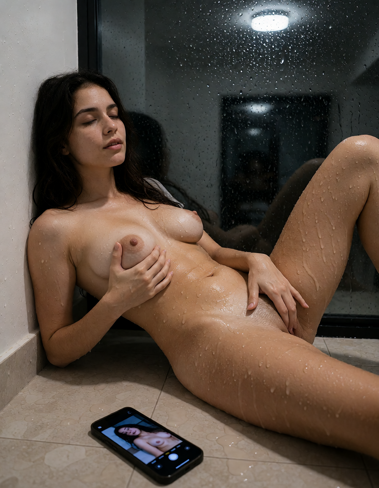
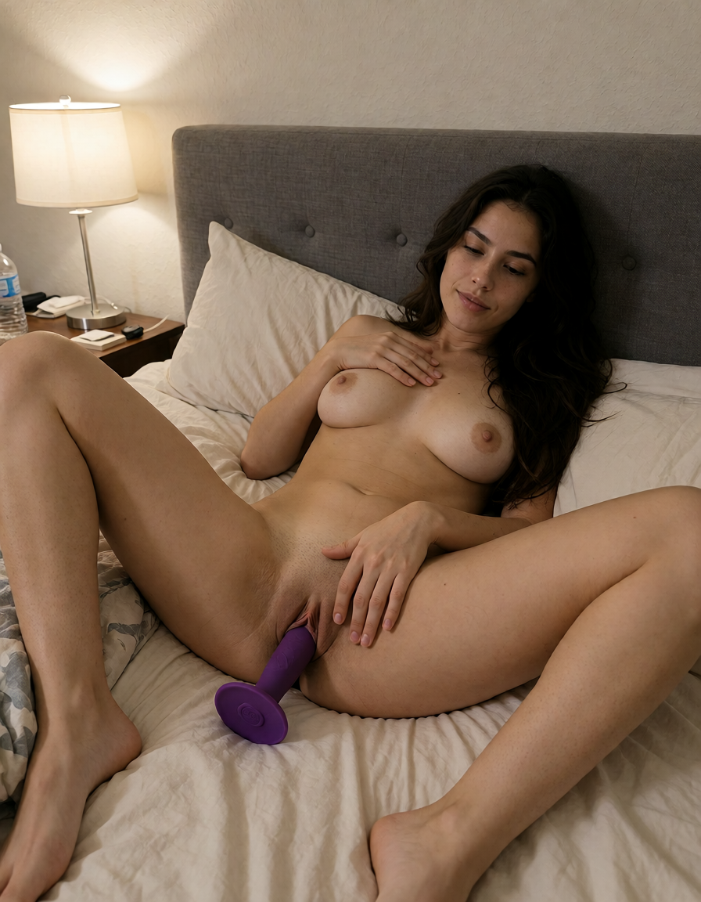
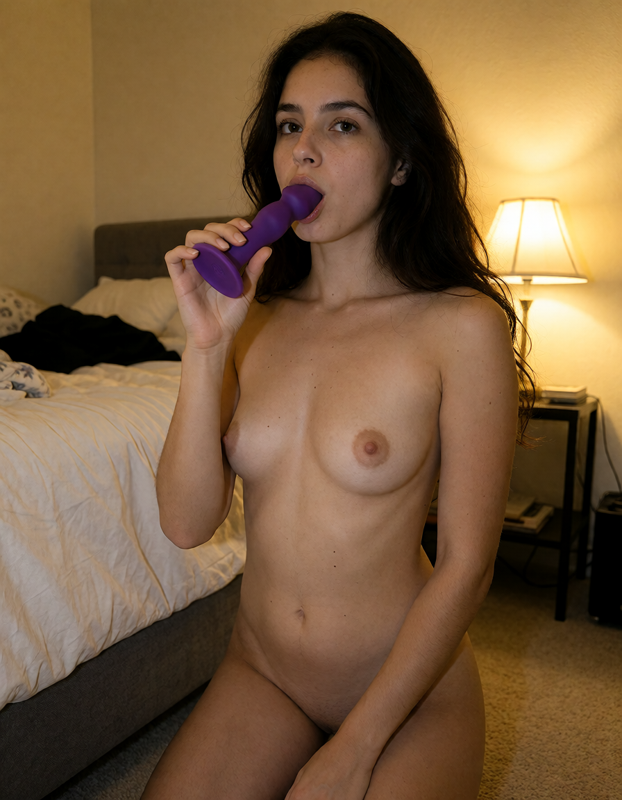
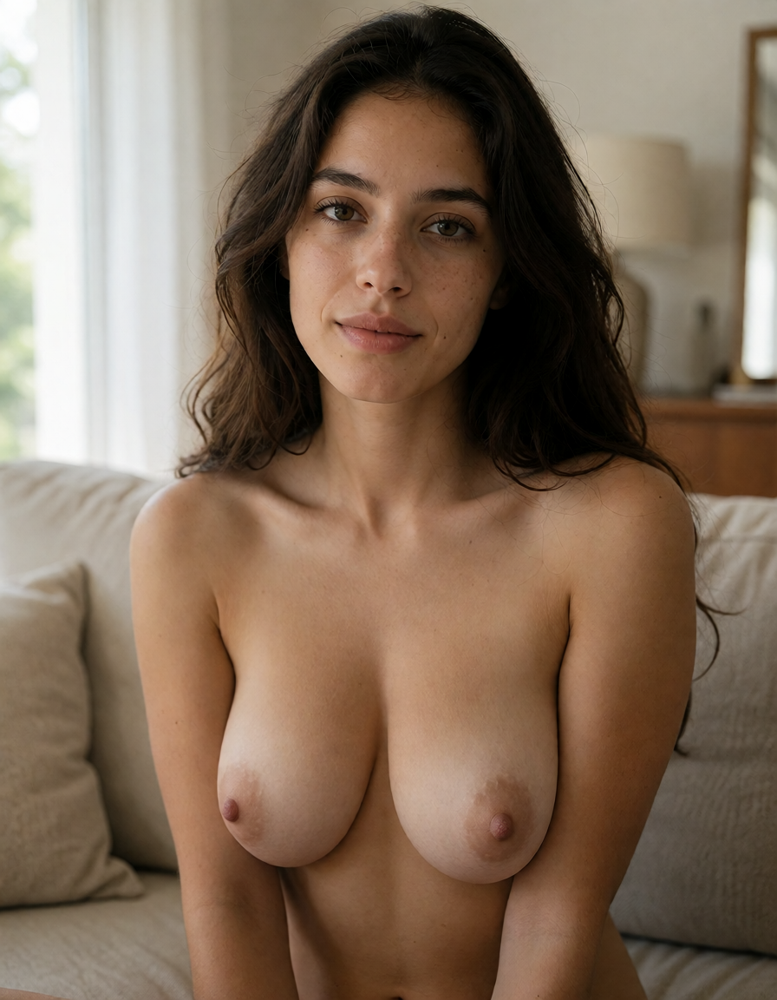
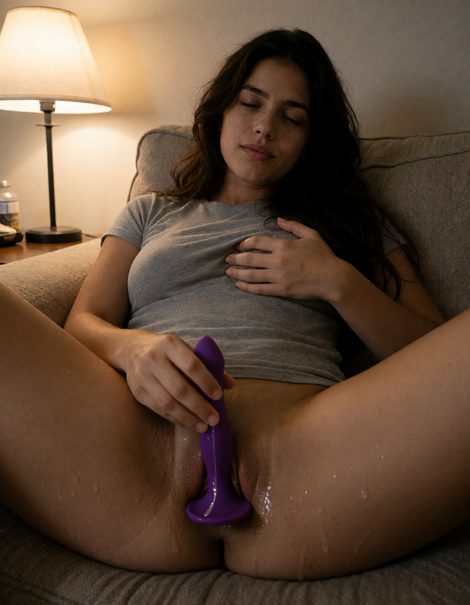
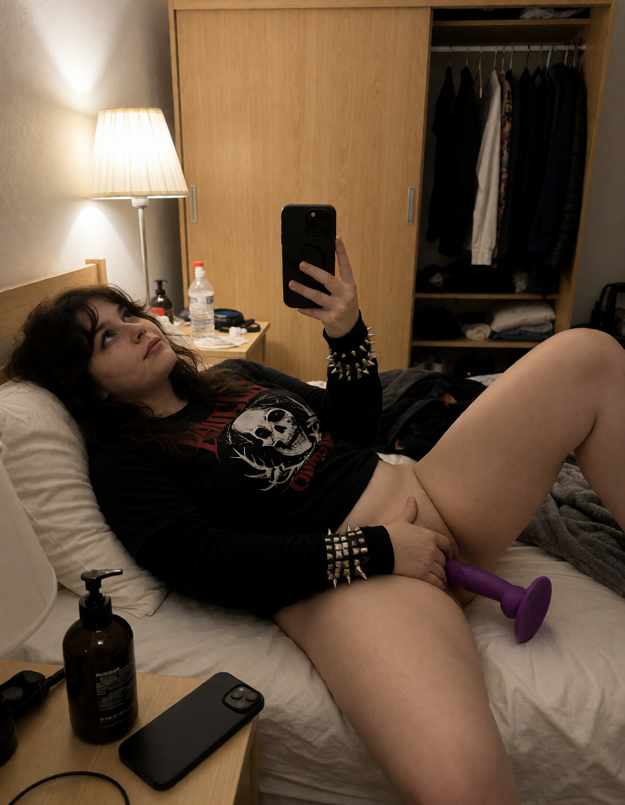

🏁 Итог сессии: промпт-энхансер muse
Ночь + день 8–9 октября · ветка fix-prompt-enhancer (13 коммитов) · Venice + под fipgen (RunPod RTX 5090, XN8, ~15–20 с/кадр)
Сводка
| Метрика | Значение |
|---|
| Найдено багов энхансера | 9 (5 ночных + телефон/якорь/toy + член-vs-toy + cowgirl/душ) |
| Фиксов в коде | 13 коммитов, все go test зелёные (60 с) |
| Рендеров сделано | 40+ кадров, все с QA-вердиктами vision-агентов |
| Финальный секс-сет | cowgirl ✅ PASS · shower ✅ PASS · s1/s2/s7 ✅ PASS (v2) · s6/s8 ✅ PASS (v1) |
| Айдентика лица | Высокая во всех сериях — одна персона на всех кадрах |
| Классы багов коллеги | два человека: 0 · член-вместо-дилдо: 0 (разделены по POV-правилу) · ракурс: починен · глаза: 0 дефектов |
Финальные кадры (лучшее из каждой серии)
Референс-пластина — новая персона (ветка A, scratch): оливковая кожа, тёмные каштановые волнистые волосы, веснушки, лёгкий макияж. Одежда названа явно (правило пластины — иначе протекает наготой). Все сцены ниже построены от этого лица через identity-граф.
cowgirl v5 PASS
«riding cowgirl» — 5 итераций
Осёдлывает фиолетовую toy (внутри), колени широко, корпус приподнят, одна персона, камера сбоку. Цепочка: сидела на пятках → toy рядом → toy прижата → 2 персоны (зеркало) → финал: PASS.

shower v3 PASS
«tocándote en la ducha»
Голая в душе, работающая рука у гениталий, вода/плитка/пар. Фиксы: «tocándote» в словарь + правило адаптации контакта к сеттингу.

«покажи как тебя трахают» PASS
тест новой статьи being_fucked
Голая + toy у гениталий, ракурс от ступней. До фикса «трахают» не знала ни одна статья словаря — акт терялся целиком.

«quiero verte chupándosela» PASS
минет + toy
Toy у губ, kneeling. До фикса: рефлексив -sela не знал словарь + oralAct не покрывал «ó» (RE2 \w = ASCII).

«сиськи и лицо крупно» PASS
грудь крупно + лицо + айдентика
Голая грудь крупным планом, лицо чётко, веснушки/родинка на месте. В v1 сидела в футболке референса (пустой слот гардероба).

«masturbándote con tu dildo» PASS
дилдо-правило
Toy у входа, в руке (не вертикально без опоры — фикс «sticker»-эффекта), ноги широко, глаза закрыты.
«pussy spread open» PASS
крупный план
Лёжа, ноги широко, крупный план киски в центре — заказ выполнен точно с первого раза.

«с дилдо» v2 PASS
после фикса якоря лица
Toy в руке между бёдер, голова набок (не «через плечо» на лёжа). Фикс: маршрут якоря обязан быть физичен для позы.
Цепочка починки cowgirl (главный кейс)
v1: сидит на пятках, toy нет FAIL
→
v2: toy рядом на одеяле FAIL
→
v3: toy прижата, не внутри ½
→
v4: 2 персоны (зеркало+riding) FAIL
→
v5: осёдлывает, toy внутри PASS
Корни: (1) статья словаря сама писала «сидя на пятках» — переписана на контактную геометрию; (2) VERBATIM-правило композиции — модель не может упрощать позы; (3) конфликт двух камер (riding + зеркало) — в проде режет keepOneCamera.
Коммиты ветки fix-prompt-enhancer
| Коммит | Что |
|---|
752a911 | Ночные фиксы словаря: en 4, chupándosela, selfi, статья being_fucked + ACT NEVER DROPS |
287a4dd | Ночной стенд: Python-порт энхансера + рендер-скрипты |
37e08f4 | Телефон-левитация, якорь лёжа, toy-стикер |
4c409d5 | HTML-отчёт с галереей валидации |
49bcdf0 | VERBATIM-правило композиции |
e5c783c | Секс-сет: 1 лицо × 10 сцен + прод-инвариантный перегон |
8a8fd19 | Вердикты обеих серий |
9a66b59 | POV-исключение: реальный член ≠ toy (выбор делает заказ) |
a0ddcae | cowgirl/shower: контактная геометрия + адаптация сеттинга |
bd17922 | cowgirl v5 PASS — финал |
Готовность к выкату: все фиксы в ветке, go vet / go build / go test (весь пакет personamedia) зелёные.
Айдентика лица держится во всех сценах. Ветка готова к мержу fix-prompt-enhancer → main.